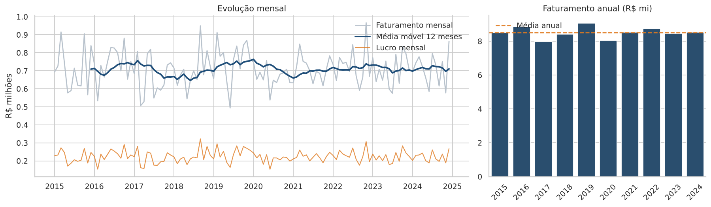
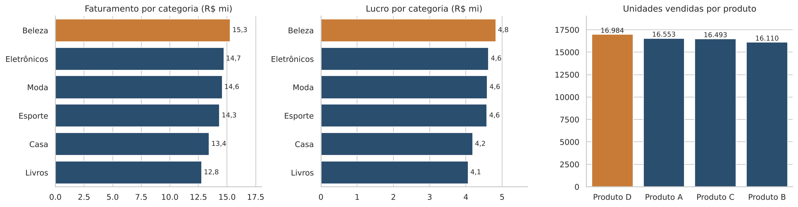
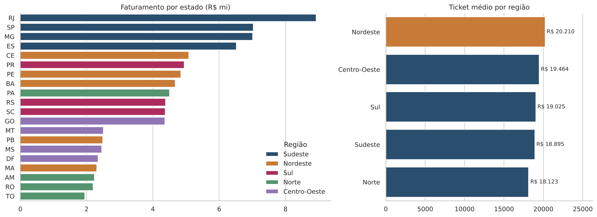
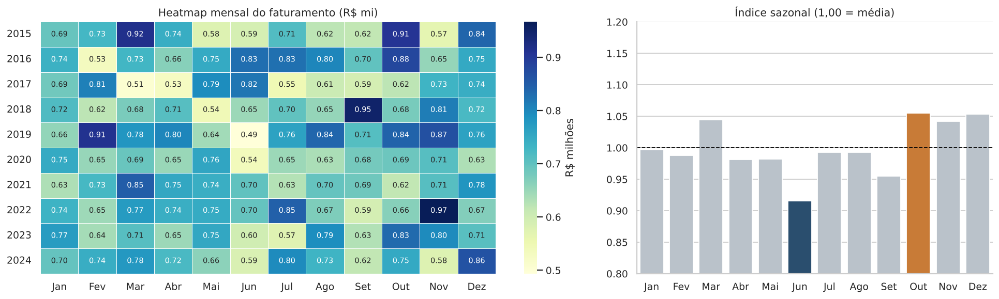
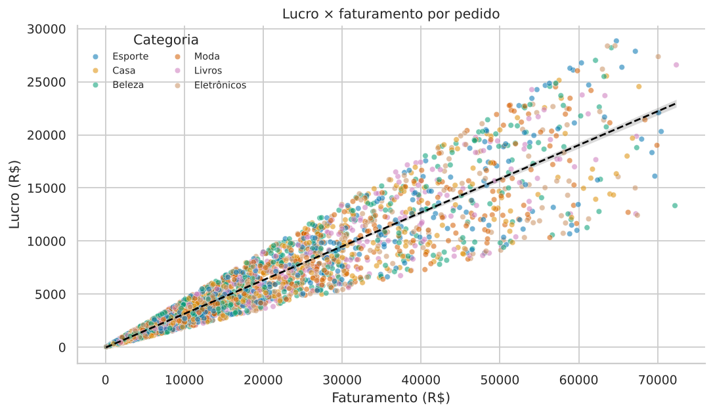
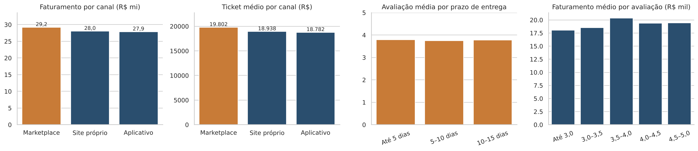

Sobre o projeto
O comércio eletrônico é um dos principais canais de venda do país e gera grandes volumes de dados. Este projeto transforma uma base simulada de vendas em informação para decisão: um notebook com a análise completa e um dashboard interativo em Streamlit com filtros, KPIs, gráficos, tabela dinâmica, consultas SQL, interpretação textual e conclusão executiva.
Perguntas de negócio
- Quais categorias têm maior faturamento e lucro?
- Quais estados concentram mais vendas?
- Existem períodos sazonais de maior consumo?
- Quais canais têm melhor desempenho?
- Quais produtos vendem mais?
- Como o faturamento evoluiu ao longo do tempo?
- Existem regiões com maior ticket médio?
- Prazo de entrega e avaliação do cliente se relacionam com as vendas?
Indicadores principais (2015–2024)
Principais visualizações






Principais achados
- Negócio estável: não há tendência de alta nem sazonalidade forte na base.
- Volume explica as diferenças: regiões e categorias líderes vendem mais pedidos/unidades, não com margem ou ticket muito maiores.
- Margem homogênea: cerca de 31–32% em todas as categorias.
- Satisfação desconectada das vendas: correlações de prazo × avaliação e avaliação × faturamento são praticamente nulas.
Atenção: a base é simulada. O lucro informado não é igual a faturamento − custo na maioria das linhas, e os padrões são fracos por construção; as conclusões de negócio devem ser validadas com dados reais.
Conclusão executiva
A operação faturou R$ 85,1 milhões e lucrou R$ 26,9 milhões, com ticket médio de R$ 19.173. As oportunidades estão em concentrar esforços nas categorias de maior volume (Beleza), aumentar o ticket médio com combos e frete grátis, investigar as regiões de menor participação (Norte e Centro-Oeste) e medir, com dados reais, o impacto do prazo de entrega na satisfação.
Tecnologias
Funcionalidades avançadas: persistência em SQLite com SQLAlchemy, dashboard multipágina, mapa interativo com Plotly, correlação estatística e série temporal com média móvel.
Componentes do projeto
Dashboard interativo
Filtre por ano, mês, região, estado, categoria e canal e explore KPIs, gráficos, mapa, tabela dinâmica e consultas SQL.
Acessar dashboard Streamlit